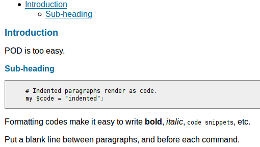
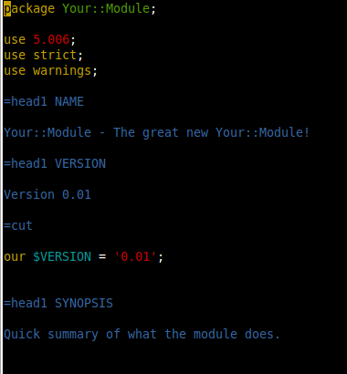
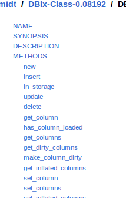
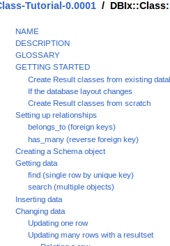
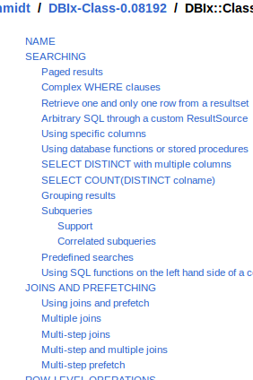
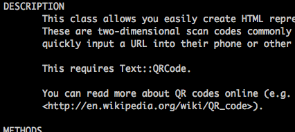
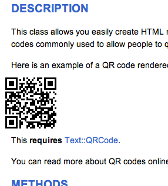

Introduction - Types of Documents
Perl documents come in various flavors
- API docs
- man pages
- Tutorials
- Manuals
- Cookbooks
The core perldocs also have other types of documents, such as FAQs.
However, our focus in this presentation is on documents you are likely to write at $work, or for code you post on CPAN.
Introduction - POD
Perl documents are written with POD
- POD is Plain Old Documentation
- POD is a markup language
- POD is simple
- POD is plain text
POD
POD - Plain Old Documentation
POD - Simple Example
Simple example
=head1 Introduction
POD is too easy.
=head2 Sub-heading
# Indented paragraphs render as code.
my $code = "indented";
Formatting codes make it easy to write B<bold>,
I<italic>, C<code snippets>, etc.
Put a blank line between paragraphs, and before
each command.

Commands paragraphs start with = (e.g. =head1)
Verbatim paragraphs, typically blocks of code, are indented with whitespace.
Ordinary paragraphs are, as you can guess, ordinary blocks of text.
POD - Standalone or Embedded
Where?
Write stand-alone .pod files,
or mix POD with code:
greet("World");
# To switch from code to POD, begin with a POD command
=item greet $name
This function prints a greeting addressed to C<$name>.
=cut
# End your POD with =cut to go back to code
sub greet { say "Hello, ", shift }
API documents typically have embedded POD. Tutorials or other types of
manuals are more commonly standalone .pod files.
perldoc is a command-line utility for viewing
POD documentation - but there are plenty of other ways to
render documents.
More on this later.
For the really adventurous: perldoc perlpodspec
Links from slide:
Conventions
What's expected in Perl documentation
Conventions - Use a Starting Template
Use a starting template
-
Module::Starter
module-starter --Module=Your::Module --author="Your Name" --email=example@example.com
-
Module::Setup
module-setup Your::Module

Links from slide:
Side-note: Module::Starter::PBP is a Module::Starter plugin that makes it simpler to follow the Damian Conway's guidelines in the "Perl Best Practices" book.
Conventions - Common Sections
Common / recommended sections
- NAME
- VERSION
- SYNOPSIS
- DESCRIPTION
- EXPORT
- METHODS (for OO)
- SUBROUTINES (for functional)
- INTERFACE
- ATTRIBUTES (for OO)
- DIAGNOSTICS
- CONFIGURATION AND ENVIRONMENT
- DEPENDENCIES
- INCOMPATIBILITIES
- BUGS / CAVEATS / BUGS AND LIMITATIONS
- AUTHOR(S)
- CONTRIBUTORS/ACKNOWLEDGEMENTS/CREDITS
- SEE ALSO
- LICENSE AND COPYRIGHT
- DISCLAIMER OF WARRANTY
* Note: This is primarily for API documentation
These headings are most applicable to API documentation.
Tutorials, Manuals, Cookbooks and other types of documents might
have entirely custom headings, and that is perfectly acceptable.
This list might seem a little overwhelming, but chances are you
won't need or want all of these sections. The ones in bold
are a good starting point.
When in doubt, simply look at some example modules on CPAN to
see how other people structure their documents.
Conventions - =head1 NAME
=head1 NAME
=head1 NAME
Your::Module - Very short description
The paragraph following a NAME heading should be: the name of your module, a dash, then a short description.
Conventions - =head1 SYNOPSIS
=head1 SYNOPSIS
Assume this is the only thing people will read!
Simple. Usable. Covers 80-100% of your API.
=head1 SYNOPSIS
use Config::Any;
my $cfg = Config::Any->load_stems({stems => \@filepath_stems, ... });
# or
my $cfg = Config::Any->load_files({files => \@filepaths, ... });
for (@$cfg) {
my ($filename, $config) = %$_;
$class->config($config);
warn "loaded config from file: $filename";
}
The synopsis should be a simple (not burdened with any unrelated
or busines" logic) piece of code that demonstrates as much of
your API as possible.
In my opinion, the SYNOPSIS section is the most important
part of any API documentation. It is often the deciding factor
when people evaluate modules for a solution to a problem.
Strive to make the synopsis something
users can copy and paste into their application to
solve their problem with minimal changes.
How to handle a big API? See the DateTime module for a good example. Even bigger? Then you should probably refactor your code first.
Conventions - =head1 DESCRIPTION
=head1 DESCRIPTION
Make this section as long as it needs to be.
- What problems does this code solve?
- Rationale for creating it
- How does it differ from existing solutions?
- Necessary background knowledge
Conventions - =head1 SEE ALSO
=head1 SEE ALSO
=head1 SEE ALSO
L<Related::Module>, L<http://related.site>, L<perlpod>
Use the SEE ALSO section to link to related modules, documents, web pages, or other related information.
Note: L< ... > is the formatting code for a link. In this
case, we're linking to the docs of the Other::Module
Conventions - When in doubt
When in doubt...
Look at other documentation on CPAN
Common Types of Documents
One document isn't always enough
Common Types of Documents - API
API
- Most common
- Usually necessary
- But not always sufficient

Common Types of Documents - Tutorial
Tutorial
-
Your::Module::Tutorial
or Your::Module::Manual::Tutorial
- Underused!

Tutorials simply walk the reader through the use of your code
step-by-step.
Often it will start with a simple stand-alone example, then continually
build upon it.
They do not need to cover every aspect of your module though.
Seriously, don't be afraid to write a tutorial.
Your module/framework/etc doesn't need to be exceptionally complex to warrant a tutorial.
Common Types of Documents - Cookbook
Cookbook
-
Your::Module::Cookbook
or Your::Module::Manual::Cookbook
-
Most useful with complex
modules or frameworks.

Cookbooks provide usable (copy-paste'able) solutions to a list of
problems.
Common Types of Documents - Manual
Manual
- Starting point for readers
- Can...
- List the API docs/tutorial pages/cookbooks/FAQs/etc
- Or better yet - tie them together
- Fill in any gaps left by your other documents
- Whatever you need it to be...
Make the manual whatever you need it to be.
Here are some examples:
Rendering
Turning POD into another format
Rendering - Many Formats
Many Formats
There is even a module (Pod::S5) for converting POD to a slideshow which, perhaps disappointingly, was not used for this presentation.
Links from slide:
Rendering - Conditional Formatting
Conditional Formatting
=begin html
<img src="http://www.jakehird.com/wp-content/uploads/2011/04/lolcat-server.jpg" />
=end html
=begin text
/\_/\
( o.o ) im in ur serverz making thingz better!!!
> ^ <
=end text
A more realistic example of this could be a diagram, with
a link to a rendered image for HTML, and an ascii diagram
for other formats.
Rendering - Conditional Formatting (pt 2)
Conditional Formatting
perldoc

html

You don't necessarily have to provide alternatives for every
type of rendering.
This is an example of a non-vital piece of information rendered
in HTML, but completely omitted from the other formats.
Encouraging Contributions
Getting others involved
Encouraging Contributions - Why?
Why?
Author is expert
∴
Author is ideal documenter
Wrong!
Now, this isn't to say that the author of some code is NOT the
ideal person to write the documentation.
But rather, they are not necessarily the ideal person.
If you'd like to try a social experiment to see this falacy in action,
approach a big name publisher with an idea for a book.
See if their first concern is for the merit of your idea and your
writing quality - or the weight of your name ("authority") on
the subject.
Encouraging Contributions - Why? (pt 2)
Why?
-
Author may not necessarily the best person to document
- Too "close" to the code - leaves gaps in explanations without realizing. Unconsciously fills in blanks the reader won't
- Has different background/experiences
- Bad writer
-
Others can accommodate different...
- learning styles
- mental models
- analogies
- background/experiences
- uses for the code
As a module user:
If docs are confusing
Fix them!
Don't be intimidated. You don't have to be an "expert". Submit a patch.
As a module author:
Encourage Contributions
Make it easy!
e.g. github